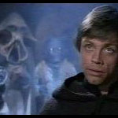

Menu:The Conspirators: |
Plot: Reason: Co-Conspirators: Action Taken: He constantly tried to get Jabba into trouble. He organised an ambush for Jabba in which the Imperial prefect, Talmont, would capture Jabba while the Hutt was inspecting a spice shipment in his warehouse near Mos Eisley. Tessk would then detonate a bomb, killing both Jabba and Talmont. He had everything set. A bomb was placed on the sail barge and Tessk was ready to sell Jabba's criminal businesses to Lady Valarian while he kept the clean ones. However the B'ommar monks warned him that his plan would fail. When Luke Skywalker arrived in the palace Tessk was unnerved. He thought that the Rebel Alliance would storm the palace and kill everyone to save Han Solo. He changed his plans, he now wanted to kill Jabba at the Pit of Carkoon. He placed a speeder on the Sail Barge and went along to the Sarlacc. While he waited for the Rebel Alliance to arrive, Luke Skywalker created havoc on the barge. Tessk soon realised that the Rebel Alliance was not coming. He got on his speeder and left the sail barge before Luke blew it up. Outcome: My Opinion: As with Bib, Tessk became reckless when the Rebel Alliance came along. He quickly had to change his plans, which meant that they weren't as foolproof as he would've wanted. His modified plot was destined to fail.
|
Off Site Links: |